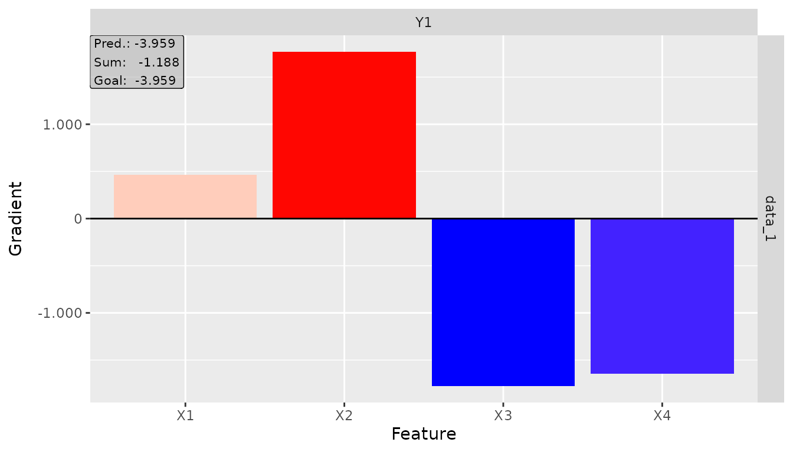
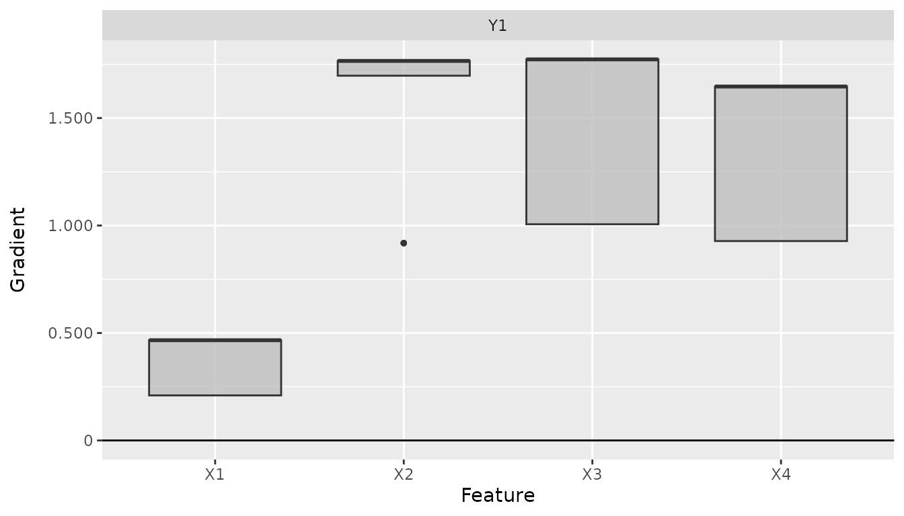

The innsight package provides two ways to apply gradient-based attribution methods to neural networks:
Converter-based approach: Works with models from
torch, keras, and neuralnet.
Converts the model internally and provides access to all interpretation
methods (LRP, DeepLift, gradients, etc.).
Direct torch approach: Specialized functions for
torch models that use native torch autograd directly
without conversion overhead.
This vignette introduces the direct torch gradient
methods which are optimized for torch models and
provide a streamlined workflow when you only need gradient-based
explanations. Moreover, these gradient-based methods can be applied to
any torch-based models and are not limited to
sequential architectures. They can be used with any model that supports
autograd, including custom torch models and complex architectures. The
only requirement is that the model’s output is differentiable with
respect to the input features and is a single tensor (not a list of
tensors).
The following gradient-based methods are available as direct torch functions:
torch_grad() - Vanilla Gradient and Gradient×Input
(-> similar to run_grad())torch_intgrad() - Integrated Gradients (-> similar
to run_intgrad())torch_smoothgrad() - SmoothGrad and SmoothGrad×Input
(-> similar to run_smoothgrad())torch_expgrad() - Expected Gradients/GradSHAP (->
similar to run_expgrad())All methods compute feature attributions that help understand which input features contribute most to the model’s predictions.
The simplest gradient-based method computes the gradient of the output with respect to the input:
# Create a simple model
model <- nn_sequential(
nn_linear(10, 20),
nn_relu(),
nn_linear(20, 3)
)
# Generate sample data
data <- torch_randn(5, 10)
# Calculate gradients
gradients <- torch_grad(model, data)
# Result shape: (batch_size, features, outputs)
dim(gradients)
#> [1] 5 10 3The result is a tensor with shape
(batch_size, features, outputs) where each element
represents the sensitivity of an output to an input feature. For more
details on this method, see the documentation for
run_grad() which uses the same underlying calculations.
Note: By default, functions return raw
torch_tensor objects. For additional features like plotting
and data conversion, use return_object = TRUE (see section
“Using Results as innsight Objects”).
By setting times_input = TRUE, we multiply the gradients
by the input values. This provides a approximated decomposition
(first-order Taylor decomposition) of the output into feature-wise
contributions:
# Calculate Gradient×Input
grad_times_input <- torch_grad(model, data, times_input = TRUE)
# The sum approximates the output value
output <- model(data)
sum_attributions <- grad_times_input$sum(dim = 2)
# Compare (should be similar)
print(paste("Output:", as.numeric(output[1, 1])))
#> [1] "Output: -0.20248943567276"
print(paste("Sum of attributions:", as.numeric(sum_attributions[1, 1])))
#> [1] "Sum of attributions: -0.137193486094475"Integrated Gradients computes the integral of gradients along a path from a baseline (typically zeros) to the actual input :
# Use zero baseline (default)
int_grads <- torch_intgrad(model, data, n = 50)
# Or specify custom baseline
baseline <- torch_zeros(1, 10)
int_grads_custom <- torch_intgrad(model, data, x_ref = baseline, n = 50)
# The attributions sum to (f(x) - f(x'))
baseline_output <- model(baseline)
output <- model(data)
diff <- output - baseline_output$expand_as(output)
sum_attributions <- int_grads$sum(dim = 2)
# Should be very close
max_diff <- (diff - sum_attributions)$abs()$max()$item()
print(paste("Max difference:", max_diff))
#> [1] "Max difference: 0.00434434413909912"The parameter n controls the number of interpolation
steps. More steps generally give more accurate results but increase
computation time.
SmoothGrad reduces noise in gradient-based explanations by averaging gradients over multiple noisy versions of the input:
where .
# Calculate SmoothGrad with 50 noisy samples
smooth_grads <- torch_smoothgrad(
model, data,
n = 50,
noise_level = 0.1 # σ = 0.1 * (max(x) - min(x))
)
# Compare with vanilla gradient
vanilla_grads <- torch_grad(model, data)
# SmoothGrad is typically less noisy
cat(paste("SmoothGrad std:", smooth_grads$std()$item(), "\n"))
#> SmoothGrad std: 0.059125903993845
cat(paste("Vanilla Gradient std:", vanilla_grads$std()$item()))
#> Vanilla Gradient std: 0.0721864178776741Expected Gradients (also called GradSHAP) extends Integrated Gradients by averaging over multiple reference values from a distribution:
# Create a reference distribution (e.g., from training data)
reference_data <- torch_randn(100, 10)
# Calculate Expected Gradients
exp_grads <- torch_expgrad(
model, data,
data_ref = reference_data,
n = 50
)
# This provides approximate Shapley values
dim(exp_grads)
#> [1] 5 10 3Let’s see a complete example using the Iris dataset:
# Load data
data(iris)
# Prepare data
X <- as.matrix(iris[, 1:4])
y <- as.integer(iris$Species)
# Convert to tensors
X_tensor <- torch_tensor(X, dtype = torch_float())
y_tensor <- torch_tensor(y, dtype = torch_long())
# Create and train a simple model
model <- nn_sequential(
nn_linear(4, 10),
nn_relu(),
nn_linear(10, 3)
)
optimizer <- optim_adam(model$parameters, lr = 0.01)
# Quick training loop
for (epoch in 1:100) {
optimizer$zero_grad()
output <- model(X_tensor)
loss <- nnf_cross_entropy(output, y_tensor)
loss$backward()
optimizer$step()
}
# Select samples to explain
samples <- X_tensor[sample(150, 50), ]
# Calculate different attributions
vanilla <- torch_grad(model, samples, output_idx = 1)
grad_input <- torch_grad(model, samples, output_idx = 1, times_input = TRUE)
int_grads <- torch_intgrad(model, samples, output_idx = 1, n = 50)
smooth_grads <- torch_smoothgrad(model, samples, output_idx = 1, n = 50)
# Compare attributions for first sample, class 1
cat("Feature attributions for first sample (Setosa):\n")
#> Feature attributions for first sample (Setosa):
cat("Vanilla Gradient:", as.numeric(vanilla[1, , 1]), "\n")
#> Vanilla Gradient: 0.4663769 1.766045 -1.773194 -1.646895
cat("Gradient×Input: ", as.numeric(grad_input[1, , 1]), "\n")
#> Gradient×Input: 2.704986 4.768322 -9.043289 -3.129101
cat("Integrated Grads:", as.numeric(int_grads[1, , 1]), "\n")
#> Integrated Grads: 2.660036 4.785859 -8.843657 -3.081376
cat("SmoothGrad: ", as.numeric(smooth_grads[1, , 1]), "\n")
#> SmoothGrad: 0.3640575 1.29836 -1.458387 -1.419275By default, all output nodes are computed. You can select specific
outputs with the output_idx parameter:
# Calculate gradients for output node 2 only
grads_class2 <- torch_grad(model, samples, output_idx = 2)
dim(grads_class2) # (3, 4, 1) - only one output
#> [1] 50 4 1
# Calculate for multiple outputs
grads_multi <- torch_grad(model, samples, output_idx = c(1, 3))
dim(grads_multi) # (3, 4, 2) - two outputs
#> [1] 50 4 2All methods support both float and double
precision:
# Use double precision for higher accuracy
grads_double <- torch_grad(model, samples, dtype = "double")
grads_float <- torch_grad(model, samples, dtype = "float")
# Check dtype
cat(paste("Is double precision?", grads_double$dtype == torch_double()), "\n")
#> Is double precision? TRUE
# Show difference
max_diff <- (grads_double - grads_float)$abs()$max()$item()
cat(paste("Max difference between double and float:", max_diff))
#> Max difference between double and float: 1.04381726373504e-07Use direct torch methods (torch_grad,
etc.) when:
torch modelsUse converter-based methods (run_grad,
run_lrp, etc.) when:
keras or neuralnet
modelsThe direct torch methods produce identical results to the converter-based approach but with less overhead:
# Direct approach
grads_direct <- torch_grad(model, samples, output_idx = 1)
# Converter approach
converter <- Converter$new(model, input_dim = c(4))
grads_converter <- Gradient$new(
converter,
as.array(samples),
output_idx = 1,
verbose = FALSE
)
result_converter <- grads_converter$get_result("array")
# Results are equivalent (within numerical precision)
max_diff <- max(abs(as.array(grads_direct[,,1]) - result_converter[,,1]))
print(max_diff) # < 1e-5By default, the torch gradient functions return raw tensors for
maximum flexibility and minimal overhead. However, you can also get
results as full-featured innsight objects that support
plotting and other methods.
Use return_object = TRUE to get an
InterpretingMethod-compatible result object:
# Get result as object
result_obj <- torch_grad(
model, samples,
output_idx = 1,
return_object = TRUE
)
# View summary
print(result_obj)
#>
#> ── Method InnsightResult (innsight) ────────────────────────────────────────────
#> Fields (method-specific):
#> Fields (other):
#> • output_idx: 1 (→ corresponding labels: 'Y1')
#> • ignore_last_act: TRUE
#> • channels_first: TRUE
#> • dtype: 'float'
#>
#> ── Result (result) ──
#>
#> ─ Shape: (50, 4, 1)
#> ─ Range: min: -1.77319, median: -0.359037, max: 1.76605
#> ─ Number of NaN values: 0
#>
#> ────────────────────────────────────────────────────────────────────────────────The returned object inherits from InterpretingMethod and
provides the same interface as converter-based methods:
# Get results in different formats
result_array <- get_result(result_obj, "array")
result_tensor <- get_result(result_obj, "torch_tensor")
result_df <- get_result(result_obj, "data.frame")
# View data.frame
head(result_df)
#> data model_input model_output feature output_node value pred
#> 1 data_1 Input_1 Output_1 X1 Y1 0.4663769 -3.959493
#> 2 data_2 Input_1 Output_1 X1 Y1 0.4663769 -3.398818
#> 3 data_3 Input_1 Output_1 X1 Y1 0.2096428 6.345428
#> 4 data_4 Input_1 Output_1 X1 Y1 0.4663769 -2.639757
#> 5 data_5 Input_1 Output_1 X1 Y1 0.2096428 5.971880
#> 6 data_6 Input_1 Output_1 X1 Y1 0.4663769 -1.911070
#> decomp_sum decomp_goal input_dimension
#> 1 -1.18766701 -3.959493 1
#> 2 -1.18766701 -3.398818 1
#> 3 -0.02682126 6.345428 1
#> 4 -1.18766701 -2.639757 1
#> 5 -0.02682126 5.971880 1
#> 6 -1.18766701 -1.911070 1The object interface includes plotting capabilities:
# Create plot
plot(result_obj, data_idx = 1, output_idx = 1)
# Plot global
plot_global(result_obj, output_idx = 1)
The direct torch gradient methods provide an efficient way to compute
gradient-based feature attributions for torch models. Key
benefits include:
For comprehensive neural network explanations including non-gradient
methods and advanced visualizations, see the main innsight
workflow using the Converter class.